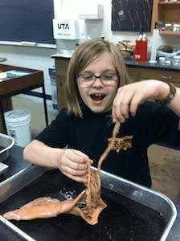

The Blackmon Lab
General lab philosophy
I am invested in your success. I define success as the ability to graduate or move to a new position; this broad definition indicates that I do not care what type of job or position you attain after spending time in my lab, just that your time with me as an advisor or mentor has been productive and helped you advance your career.
I want you to work hard but efficiently while you are in the lab. You should try to hit the goals that we establish for your career without working much more than 40 hours a week. There are times when more work will be necessary - if we are doing an intense experiment or if you have several manuscripts with deadlines. However, it is imperative that you have a life outside of the lab, exercise, eat good food, feel the sunshine.
On the happiness front, everyone needs to take vacation days during the year. Be sure to communicate with me when you would like to be gone for vacation and for how long, and give me at least 2 weeks notice for short trips (3-4 days) but a much longer head’s up for longer trips (>4 days).
Expectations for ALL lab members:
- Treat other lab members with respect and dignity
- Participate in weekly lab meetings
- Attend departmental seminars
- Prepare for our regular progress/pitfalls meetings
- Proof-read manuscripts from other lab members
- Maintain a set of lab notes, including directories of data, annotated codes and versions, detailed methods. Lab notes should be sufficient to reproduce results without additional instructions.
- Participate in general lab responsibilities (beetle maintenance, maintain common areas, community outreach events)
Postdocs
Postdocs in my lab will be excellent colleagues and mentors to the other members of the lab. Postdoctoral applicants are expected to apply for external funding, with mentorship. If you are interested in joining my lab as a postdoc, please read through the research projects in the lab, and the following expectations and responsibilities, then email me 1) your curriculum vitae, and 2) one page cover letter describing your research interests and background.
Expectations for postdocs:
- Write and submit manuscripts
- Apply for external funding (either individual postdoc fellowships or contributing to larger lab grant writing)
- Be available in the lab/office most days from 9:30 – 16:00 this is when most academic activities occur and you need to be present to be involved
- Optional, but preferred: Mentor at least one undergraduate student
My responsibilities to postdocs:
- Assist with identifying and writing postdoctoral fellowships
- Develop project ideas, including independent projects that can be taken with the postdoc
- Interpret results
- Proof-read manuscripts
- Discuss future career goals (e.g., do you want to teach, go into academia, continue in research?), and plan ways to facilitate these goals
- Support travel to at least one meeting per year (must present research)
- Meet regularly to discuss progress and pitfalls
Graduate Students
Graduate students in my lab will be trained broadly in evolutionary biology, studying sex chromosomes, genomes, and phenotypic traits. Students will be trained to be excellent colleagues and mentors to the other members of the lab. Graduate students are expected to apply for external funding, and can expect to spend typically 4-6 years to complete a Ph.D. If you are interested in joining my lab as a graduate student, please read through the research projects in the lab, and the following expectations and responsibilities, then email me 1) your CV, and 2) one-page cover letter describing your research interests and background.
Expectations of graduate students:
- Write and submit a pre-doctoral fellowship proposal and contribute preliminary analysis to a full grant proposal.
- Write and submit manuscripts
- Present a poster or talk of research progress at a conference at least once a year.
- Be available in the lab/office most days from 9:30 – 16:00 this is when most academic activities occur, and you need to be present to be involved
- Optional, but preferred: Mentor at least one undergraduate student
My responsibilities to graduate students:
- Assist with identifying and writing graduate student fellowships (before and during Ph.D.)
- Develop project ideas
- Interpret results
- Proof-read and contribute to writing of manuscripts
- Discuss future career goals (e.g., do you want to teach, go into academia, continue in research?), and plan ways to facilitate these goals
- Support travel to at least one meeting per year (must present research)
- Meet weekly to discuss progress and pitfalls
Undergraduates
I enjoy working with undergraduate research students. If you are interested in joining my lab as an undergraduate researcher, please read through the research projects in the lab, and the following expectations and responsibilities, then email me 1) your CV, and 2) one-page cover letter describing your research interests and background.
Expectations of undergraduate students:
- Commit at least 10 hours a week for one semester
- Participate in weekly lab meetings
- Present a short talk of research background and results to the lab once a semester.
- Be available in the lab/office for a minimum pre-arranged set of hours to facilitate interactions
My responsibilities to undergraduate students:
- Preparing a structured project
- Analyzing and interpreting results
- Proof-read and contribute substantially to writing results
- Discuss future career goals (e.g., do you want to teach, go into academia, continue in research?), and plan ways to facilitate these goals
- Meet weekly to discuss progress and pitfalls
Much of the above information was borrowed or inspired by Melissa Wilson-Sayers' lab website. If you are interested in sex chromosomes check out the awesome work of the Wilson Sayres Lab.